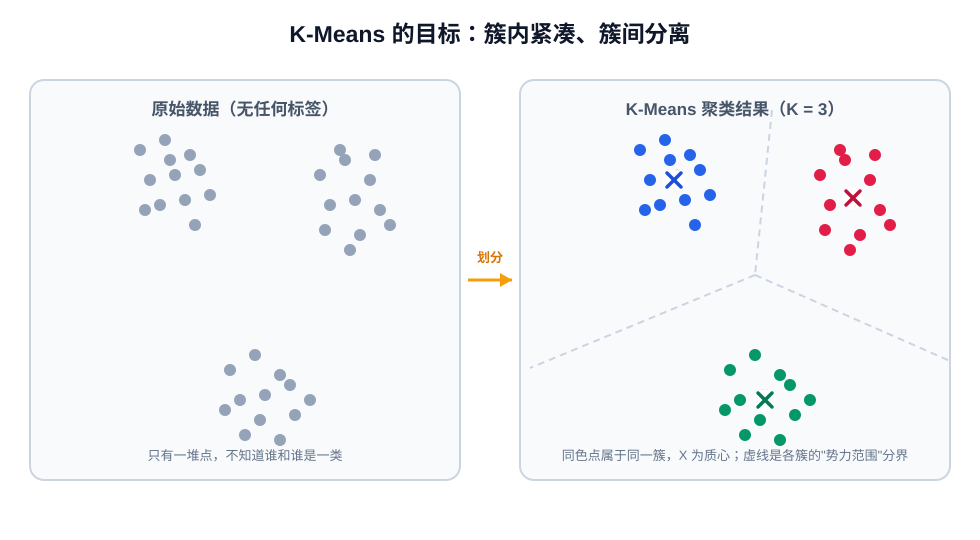
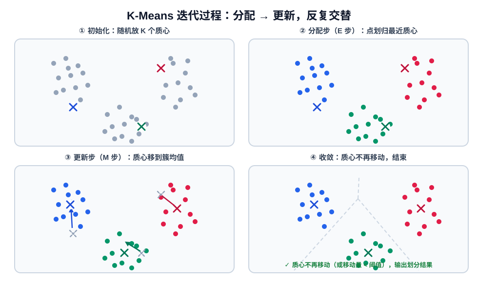
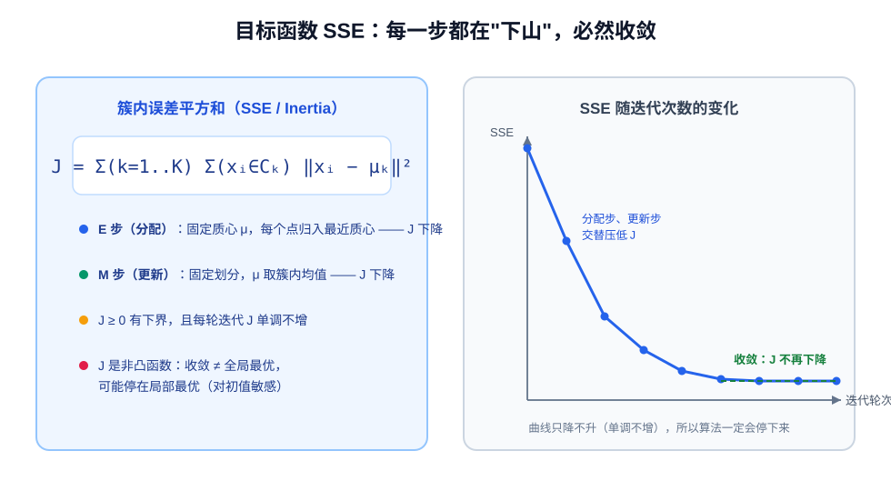
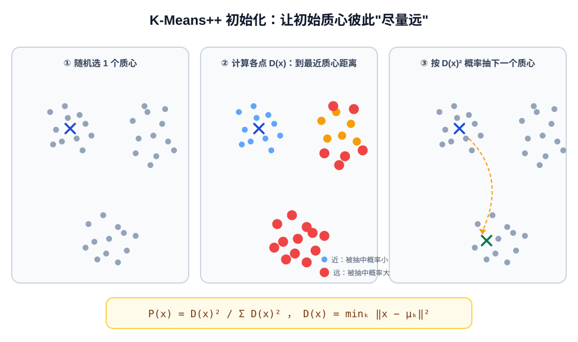
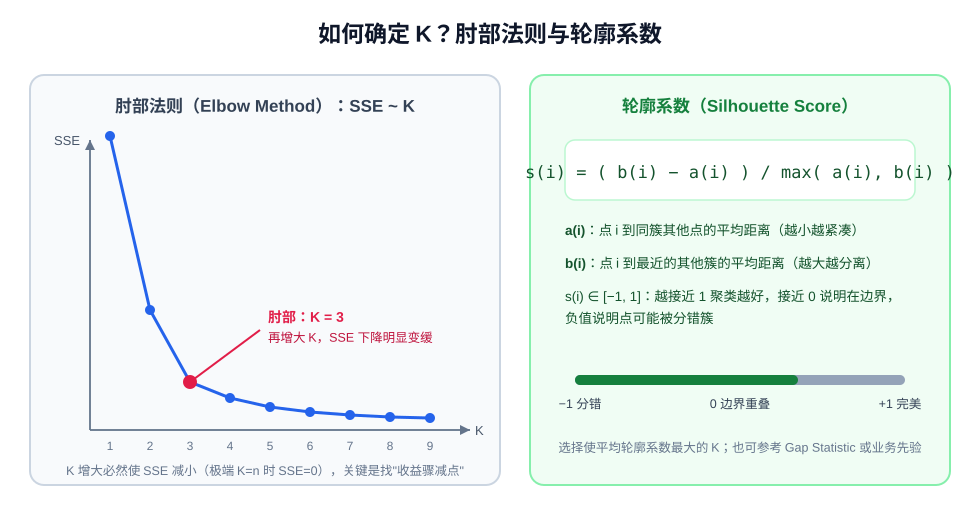
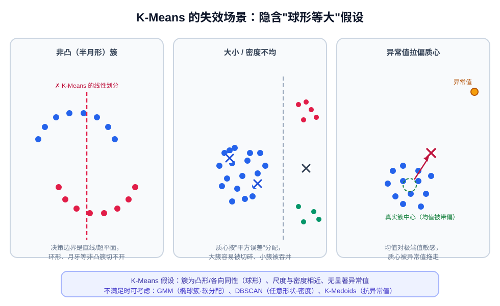

K-Means 聚类算法
前言
在无监督学习（Unsupervised Learning）中，我们手里只有一堆没有标签的数据，却希望发现它们内部的"天然分组"。这类任务称为聚类（Clustering）：把相似的样本归为同一个簇（Cluster），要求"簇内足够相似、簇间足够不同"。
K-Means 是最经典、应用最广泛的聚类算法。它思想极其朴素——先随便放 K 个"中心点"，然后反复做两件事：把每个点划给最近的中心、把中心移动到所辖点的平均位置——直到中心不再移动。尽管简单，K-Means 却是理解 EM 算法、向量量化、GMM 等更复杂模型的基石，在用户分群、图像压缩、异常检测、文本/Embedding 主题聚类等场景中随处可见。
本文将从算法流程讲到数学推导（目标函数、收敛性证明），再到 K-Means++、K 值选择、工程实现与常见变体，形成完整的知识闭环。
1. 核心思想：物以类聚
给定 $n$ 个样本点 ${x_1, x_2, \dots, x_n}$，K-Means 要把它们划分成 $K$ 个簇 $C_1, C_2, \dots, C_K$，每个簇用一个质心（Centroid） $\mu_k$ 代表。算法追求的目标是：
- 簇内紧凑：每个点到自己簇质心的距离尽量小；
- 簇间分离：不同簇的质心之间距离尽量大。

一句话概括：K-Means 试图找到 K 个质心，使所有点到其所属质心的距离平方和最小。
K 的含义：K 是人为指定的超参数，表示"我认为数据中有 K 个群体"。K-Means 是硬聚类（Hard Clustering）——每个点只属于一个簇；与之相对的是软聚类（如 GMM、Fuzzy C-Means），点以概率归属于各个簇。
2. 算法流程
K-Means 的整个生命周期就是"初始化 → 交替迭代 → 收敛"：
- 初始化：随机选择 $K$ 个点作为初始质心 $\mu_1, \dots, \mu_K$（实践中用 K-Means++，见第 5 节）；
- 分配步（Assignment / E 步）：对每个点 $x_i$，计算它到所有质心的距离，划入最近的那个簇：
$$ c_i = \arg\min_k \; \lVert x_i - \mu_k \rVert^2 $$
- 更新步（Update / M 步）：对每个簇 $k$，把质心移动到该簇所有点的均值位置：
$$ \mu_k = \frac{1}{|C_k|} \sum_{x_i \in C_k} x_i $$
- 迭代：重复步骤 2、3，直到质心不再变化（或变化量小于阈值、达到最大迭代次数）。

伪代码描述如下：
输入：数据集 X，簇数 K
输出：K 个质心 μ、每个点的簇标签
1. 初始化 K 个质心（K-Means++）
2. repeat
3. # E 步：分配
4. for 每个点 x_i:
5. c_i ← 距离最近的质心编号
6. # M 步：更新
7. for 每个簇 k:
8. μ_k ← 簇 C_k 内所有点的均值
9. until 质心不再移动（或 SSE 变化 < tol）
停止条件通常有三种，满足任一即可：
- 质心完全不动（分配结果不再变化）；
- 质心移动距离小于容差
tol（sklearn 默认 $10^{-4}$）； - 达到最大迭代次数
max_iter（防止病态数据下迭代过久）。
3. 数学原理
3.1 目标函数：簇内误差平方和 SSE
K-Means 优化的目标函数称为簇内误差平方和（Sum of Squared Errors），在 sklearn 中叫 Inertia：
$$ J = \sum_{k=1}^{K} \sum_{x_i \in C_k} \lVert x_i - \mu_k \rVert^2 $$
它衡量"所有点离自己簇中心有多远"。聚类越好，$J$ 越小。注意 $J$ 只关心簇内距离，不显式优化簇间距离——但簇内紧凑自然会导致簇间分离。
3.2 为什么"分配步"能最小化 J？
分配步中质心 $\mu_k$ 固定，每个点独立选择归属。$J$ 是所有点距离平方的加和，对单个点 $x_i$ 而言：
$$ \min_{c_i} \lVert x_i - \mu_{c_i} \rVert^2 $$
显然选择距离最近的质心即可让该项最小。所有点各自取最小，总和 $J$ 也就降到了当前质心下的最小值——这一步一定让 $J$ 不增。
3.3 为什么"更新步"质心取均值？——求导推导
更新步中划分固定，我们要找让 $J$ 最小的质心位置。把平方距离按维度展开（设维度为 $d$）：
$$ J = \sum_{k=1}^{K} \sum_{x_i \in C_k} \sum_{j=1}^{d} (x_{ij} - \mu_{kj})^2 $$
对第 $k$ 个质心的第 $j$ 维求偏导并令其为 0：
$$ \frac{\partial J}{\partial \mu_{kj}} = \sum_{x_i \in C_k} -2(x_{ij} - \mu_{kj}) = 0 $$
整理得：
$$ \sum_{x_i \in C_k} x_{ij} = |C_k| \cdot \mu_{kj} \quad\Longrightarrow\quad \boxed{\mu_{kj} = \frac{1}{|C_k|} \sum_{x_i \in C_k} x_{ij}} $$
即质心的最优位置就是簇内所有点的均值（这也是 K-Means 中 "Means" 的由来）。二阶导数为 $2|C_k| > 0$，说明这确实是极小值点。这一步同样让 $J$ 不增。
3.4 收敛性：为什么算法一定会停？
K-Means 的收敛性可以用"单调有界定理"严格保证：
- 单调不增：由 3.2、3.3 可知，每次分配步和更新步都不会让 $J$ 增大；
- 有下界：$J$ 是平方和，恒有 $J \ge 0$；
- 分配方案的总数是有限的（$K^n$ 种），而 $J$ 在每轮迭代后严格下降或不变。
因此算法必然在有限步内到达某个稳定状态，$J$ 不再变化。

但要特别注意：$J$ 是一个非凸函数，收敛 ≠ 收敛到全局最优。不同的初始质心可能把算法带到不同的局部最优解，这正是 K-Means 对初始化敏感、需要 K-Means++ 和多次重启的原因。
3.5 EM 视角：K-Means 是 EM 算法的硬分配特例
K-Means 的两步交替与统计学中的 EM 算法（Expectation-Maximization） 完全同构：
| EM 算法 | K-Means |
|---|---|
| E 步：在固定参数下估计隐变量的后验分布 | 分配步：固定质心，确定每个点的簇标签 |
| M 步：在固定隐变量下最大化似然、更新参数 | 更新步：固定划分，把质心更新为簇均值 |
区别在于：标准 EM（如 GMM）的 E 步输出的是"属于各簇的概率"（软分配），而 K-Means 只保留最近的一个簇（硬分配，概率非 0 即 1）。可以证明，K-Means 等价于"各簇协方差相同且各向同性、先验均匀"的高斯混合模型（GMM）用 EM 求解时取硬分配极限。
4. 距离度量与数据预处理
4.1 为什么默认用欧氏距离？
标准 K-Means 使用欧氏距离平方 $\lVert x - \mu \rVert^2$，这不是随意选择：3.3 节的推导表明，"质心取均值"恰好最小化欧氏距离平方和。若换用其他度量，"均值"就不再是最优中心，算法的收敛保证也会失效。
| 度量 | 能否用于标准 K-Means | 说明 |
|---|---|---|
| 欧氏距离 L2 | ✅ 默认 | 与"均值中心"严格配套 |
| 曼哈顿距离 L1 | ⚠️ 不严格 | 中位数才是 L1 的最优中心 → 应改用 K-Medians |
| 余弦相似度 | ⚠️ 需变体 | 使用球面 K-Means：先把向量归一化为单位向量，此时余弦相似度与欧氏距离等价，质心取归一化后的均值 |
| 核方法 | 🔁 换算法 | 非线性可分 → Kernel K-Means / 谱聚类 |
工程提示：在 RAG / 文本 Embedding 聚类场景中，向量通常已归一化，用球面 K-Means（归一化 + 欧氏距离）等价于按余弦方向聚类，效果往往比直接 K-Means 更好。
4.2 必须做标准化/归一化
K-Means 基于距离，特征量纲会直接决定聚类结果。例如一个特征是"年龄（0~100）"，另一个是"收入（0~1,000,000）"，距离几乎被收入完全主导。正确做法是先做标准化：
$$ x'_{ij} = \frac{x_{ij} - \bar{x}_j}{\sigma_j} \quad\text{（Z-Score 标准化）} $$
或归一化到 $[0,1]$（Min-Max）。对长尾分布特征，可先做 log1p 变换再标准化。
5. 初始化问题与 K-Means++
5.1 随机初始化的两个坑
- 局部最优：初始质心挤在一起，最终可能收敛到明显糟糕的划分（如把一个真簇劈成两半）；
- 空簇：迭代中某个质心可能没有任何点归属（尤其初始质心落在数据稀疏区时），此时均值无定义，需要兜底处理（随机重置一个点，或把 SSE 最大的点分裂出去）。
5.2 K-Means++：让初始质心尽量分散
K-Means++（Arthur & Vassilvitskii, 2007）只改进初始化阶段，后续迭代完全不变，却能以极大概率得到优质解：
- 从数据中随机选 1 个点作为第一个质心；
- 对每个点 $x$，计算它到最近的已选质心的距离 $D(x)$；
- 以概率 $P(x) = \dfrac{D(x)^2}{\sum_{x'} D(x')^2}$ 轮盘赌选出下一个质心——离已有质心越远的点，被选中的概率越大；
- 重复步骤 2~3，直到选出 $K$ 个质心。

直觉上：第一个质心随便放；之后的质心被"推"向尚未被覆盖的数据区域，从而保证初始质心彼此分散。论文证明该初始化使期望目标函数与最优解的近似比为 $O(\log K)$。
5.3 多次重启（n_init）
即便用 K-Means++，单次运行仍可能陷入局部最优。因此实践中会用不同随机种子跑多次（sklearn 的 n_init，旧版本默认 10，新版本默认 auto），取 SSE 最小的那次作为最终结果。
6. 如何确定 K 值？
K 是 K-Means 最重要也最让人头疼的超参数。常用三种判据：
6.1 肘部法则（Elbow Method）
画出不同 $K$ 下的 SSE 曲线：随着 $K$ 增大，SSE 必然单调下降（$K=n$ 时 SSE=0，每个点自成一簇）。但在某个 $K$ 之后，下降幅度会骤然变缓——曲线形似手肘，肘部对应的 $K$ 就是"性价比"最高的簇数。
6.2 轮廓系数（Silhouette Score）
轮廓系数同时衡量"簇内紧凑度 $a$"和"簇间分离度 $b$"，对单个样本 $i$：
$$ a(i) = \text{同簇其他点的平均距离}, \qquad b(i) = \min_{k \ne c_i}\text{到簇 }k\text{ 所有点的平均距离} $$
$$ s(i) = \frac{b(i) - a(i)}{\max(a(i), b(i))}, \qquad s(i) \in [-1, 1] $$
- $s \to 1$：聚类很好，点既贴近本簇又远离他簇；
- $s \approx 0$：点在两个簇边界上，重叠严重；
- $s < 0$：点很可能被分错了簇。
取所有样本 $s(i)$ 的平均，选择使平均轮廓系数最大的 $K$（一般要求 $K \ge 2$）。

6.3 其他方法与业务先验
- Gap Statistic：比较实际 SSE 与"随机均匀分布数据"的期望 SSE，Gap 最大的 K 最优；
- 业务先验：很多场景 K 由业务决定（如用户分层要 5 档、调色板要 16 色），此时量化指标只是辅助验证。
7. 复杂度分析
设样本数 $n$、簇数 $K$、维度 $d$、迭代轮数 $I$：
| 环节 | 时间复杂度 | 说明 |
|---|---|---|
| 一轮 E 步（算距离+分配） | $O(nKd)$ | 每个点与 $K$ 个质心算 $d$ 维距离 |
| 一轮 M 步（更新质心） | $O(nd)$ | 累加各簇点 |
| 整体 | $O(nKdI)$ | $I$ 通常很小（几十轮），可近似为线性 |
| 空间复杂度 | $O(n + K)$（存标签与质心）；若缓存距离矩阵为 $O(nK)$ |
特点：
- 对 $n$ 近似线性，可扩展到百万级数据（配合 Mini-Batch K-Means）；
- $K$、$d$ 增大时代价线性增长；高维数据受"维度灾难"影响，距离区分度下降，建议先降维（PCA）；
n_init次重启会成倍放大开销。
8. 优缺点与适用边界
优点：
- 思想简单、易于实现，参数只有一个 $K$；
- 对大数据集可扩展，Mini-Batch 版本可流式/分布式训练；
- 结果可解释：每个质心就是一类的"典型代表"（如用户群的平均画像、调色板的代表色）。
缺点：
- 必须预先指定 $K$；
- 对初始化敏感，可能陷入局部最优；
- 隐含凸形/球形、各簇尺度与密度相近的假设，无法处理月牙形、环形等非凸簇；
- 质心是均值，对异常值敏感；
- 只适用于"均值有意义"的数值向量（类别变量需特殊编码或改用 K-Modes）。

不满足假设时的替代方案：
- 非凸/任意形状簇 → DBSCAN、谱聚类；
- 椭球形簇、想要软分配 → GMM；
- 异常值多、想用真实样本当中心 → K-Medoids（PAM）；
- 类别型数据 → K-Modes。
9. 代码实现
9.1 NumPy 从零实现（含 K-Means++ 与多次重启）
import numpy as np
def kmeans_pp_init(X, k, rng):
"""K-Means++ 初始化：返回 k 个初始质心"""
n = len(X)
centers = [X[rng.integers(n)]] # ① 随机选第一个
for _ in range(k - 1):
dist_sq = ((X[:, None, :] - np.array(centers)[None, :, :]) ** 2).sum(axis=2)
d2 = dist_sq.min(axis=1) # ② D(x)：到最近质心的距离平方
probs = d2 / d2.sum() # ③ P(x) = D² / ΣD²
centers.append(X[rng.choice(n, p=probs)])
return np.array(centers)
def kmeans(X, k, n_init=10, max_iter=100, tol=1e-4, random_state=0):
rng = np.random.default_rng(random_state)
best = (np.inf, None, None) # (SSE, 质心, 标签)
for _ in range(n_init):
centers = kmeans_pp_init(X, k, rng)
for _ in range(max_iter):
# E 步：分配给最近质心
dist = np.linalg.norm(X[:, None, :] - centers[None, :, :], axis=2)
labels = dist.argmin(axis=1)
# M 步：质心更新为簇均值；空簇则随机重置一个点兜底
new_centers = np.array([
X[labels == j].mean(axis=0) if np.any(labels == j) else X[rng.integers(len(X))]
for j in range(k)
])
shift = np.linalg.norm(new_centers - centers)
centers = new_centers
if shift < tol: # 收敛
break
inertia = ((X - centers[labels]) ** 2).sum() # SSE / Inertia
if inertia < best[0]:
best = (inertia, centers, labels)
return best[1], best[2], best[0] # 质心、标签、SSE
# 使用示例
if __name__ == "__main__":
from sklearn.datasets import make_blobs
X, _ = make_blobs(n_samples=1000, centers=3, n_features=2, random_state=42)
X = (X - X.mean(axis=0)) / X.std(axis=0) # 务必先标准化
centers, labels, inertia = kmeans(X, k=3)
print("SSE =", inertia)
print("质心：\n", centers)
9.2 sklearn 调用与 K 值评估
import matplotlib.pyplot as plt
from sklearn.cluster import KMeans
from sklearn.preprocessing import StandardScaler
from sklearn.metrics import silhouette_score
X_scaled = StandardScaler().fit_transform(X)
sse, sil = [], []
for k in range(2, 10):
km = KMeans(n_clusters=k, init="k-means++", n_init=10, random_state=42)
labels = km.fit_predict(X_scaled)
sse.append(km.inertia_)
sil.append(silhouette_score(X_scaled, labels)) # K=1 时无定义
# 画肘部曲线
plt.plot(range(2, 10), sse, "o-")
plt.xlabel("K"); plt.ylabel("SSE"); plt.show()
9.3 Mini-Batch K-Means：大数据集加速
每次迭代只用一个小批量数据更新质心，牺牲极小的精度换取数倍加速，适合样本量百万级或在线场景：
from sklearn.cluster import MiniBatchKMeans
mbk = MiniBatchKMeans(n_clusters=100, batch_size=1024, n_init=3, random_state=42)
labels = mbk.fit_predict(X_scaled)
9.4 实战应用：图像颜色压缩（向量量化）
K-Means 天然是一种向量量化（Vector Quantization）方法。把每个像素的 RGB 三维向量聚类成 $K$ 个代表色，用质心颜色替换原像素，即可把真彩图压缩为 $K$ 色调色板：
import numpy as np
from PIL import Image
from sklearn.cluster import KMeans
img = np.asarray(Image.open("demo.jpg"), dtype=np.float64) / 255.0
pixels = img.reshape(-1, 3) # (H*W, 3)
km = KMeans(n_clusters=16, n_init=4, random_state=0).fit(pixels)
quantized = km.cluster_centers_[km.labels_].reshape(img.shape)
Image.fromarray((quantized * 255).astype(np.uint8)).save("demo_16color.jpg")
同类应用还有：用户行为画像分群（质心即人群特征均值）、新闻/Embedding 主题发现、异常检测（到所属质心距离过大的点视为异常）等。
10. 常见变体与算法对比
| 算法 | 解决的问题 | 核心变化 |
|---|---|---|
| K-Means++ | 随机初始化差 | 加权抽样使初始质心分散 |
| Mini-Batch K-Means | 数据量大 | 每轮只用小批量更新质心 |
| K-Medoids（PAM） | 异常值敏感 | 中心必须是真实样本点，用绝对距离，结果更鲁棒但更慢 |
| K-Modes | 类别型数据 | 用众数代替均值、用匹配度代替欧氏距离 |
| K-Medians | L1 范数 | 中心取中位数，对异常值更鲁棒 |
| Bisecting K-Means | 层次结构 | 自顶向下反复二分 SSE 最大的簇，产生层次聚类树 |
| Fuzzy C-Means | 软分配 | 每个点以隶属度 $[0,1]$ 属于所有簇 |
| 球面 K-Means | 文本/Embedding | 向量归一化后聚类，等价余弦相似度 |
| GMM（EM） | 椭球簇/软分配 | 概率模型，输出归属概率与协方差 |
与 KNN 的区别（面试高频）：二者名字相似但本质完全不同：
| 维度 | K-Means | KNN |
|---|---|---|
| 学习方式 | 无监督，无需标签 | 有监督，需要标签 |
| 任务 | 聚类（发现分组） | 分类/回归（预测标签） |
| K 的含义 | 簇的个数 | 投票时参考的最近邻居数 |
| 训练过程 | 有迭代训练，输出质心 | 惰性学习，不训练，预测时才计算 |
11. 实战 Checklist
- 先标准化：数值特征量纲差异大时，K-Means 结果几乎一定错误；
- 先看数据形态：画散点图/降维（PCA、t-SNE）确认簇是否近似凸形、密度是否均衡，否则考虑 DBSCAN/GMM；
- K 值：肘部法则 + 轮廓系数双指标，再结合业务先验；
- 初始化：始终使用
init="k-means++"并保持n_init ≥ 10； - 异常值：聚类前做截断/分箱，或改用 K-Medoids；
- 高维数据：先 PCA 降维再聚类，既加速又缓解维度灾难；
- 结果验证：观察质心的业务含义（画像可解释性），并抽样检查轮廓系数为负的点；
- 大数据：超过百万样本用 Mini-Batch 版本或分布式实现（Spark MLlib）。
12. 面试高频问题速答
Q1：K-Means 一定收敛吗？能保证全局最优吗？ 一定收敛：目标函数 SSE 每步单调不增且有下界 0。但 SSE 非凸，只保证收敛到局部最优，所以需要 K-Means++ 和多次重启。
Q2：为什么质心取均值？ 固定划分后对 SSE 求偏导令其为 0，解析解就是簇内均值（欧氏距离平方下均值是最优中心点）。
Q3：出现空簇怎么办？ 常见策略：随机选一个点重新作为该簇质心；或选择当前 SSE 贡献最大（离质心最远）的点分裂为新质心。
Q4：K-Means 和 GMM 的关系？ K-Means 可视为 GMM 的硬分配特例：当各簇协方差相同且各向同性、先验均匀、E 步输出退化为 0/1 硬标签时，GMM 的 EM 迭代就等价于 K-Means。GMM 更灵活（椭球簇、软标签）但计算更贵。
Q5：K-Means 能用曼哈顿距离吗？ 不能直接用——均值不再最小化 L1 距离，收敛性失效。L1 下最优中心是中位数，应使用 K-Medians。
Q6：时间复杂度？为什么适合大数据？ $O(nKdI)$，迭代轮数 $I$ 通常很小，对样本数近似线性；Mini-Batch 版本可进一步降为每轮 $O(bKd)$，支持流式与分布式。